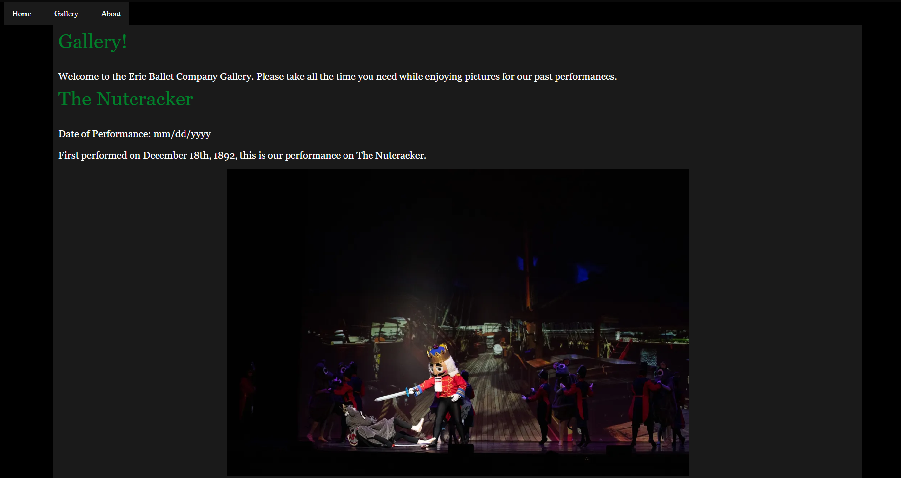
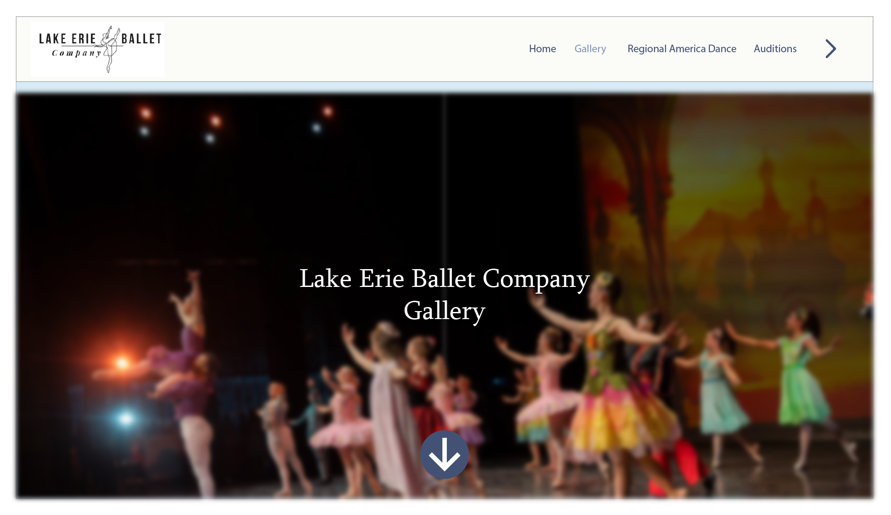
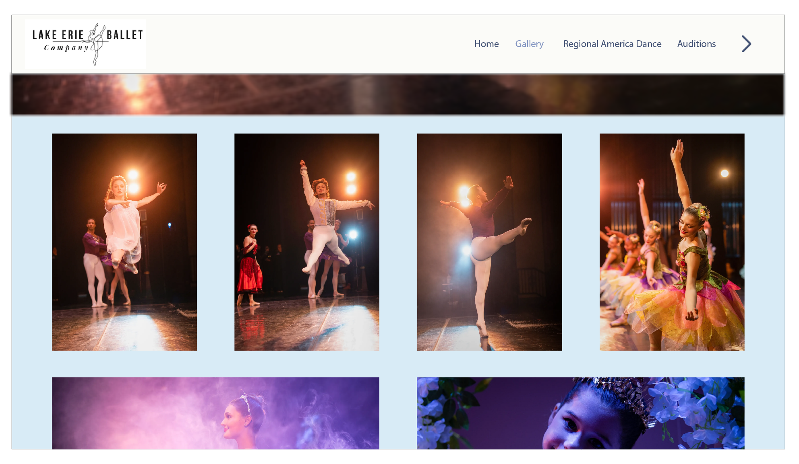
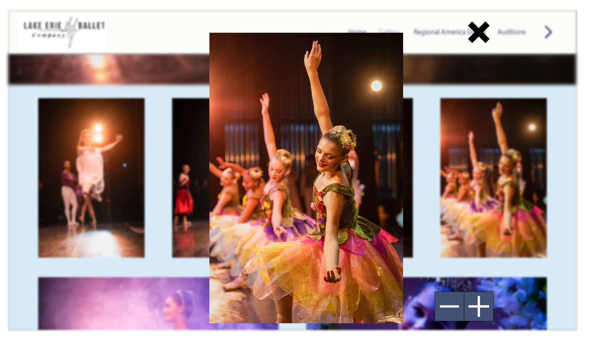

This week I have started to make a mock-up of the gallery page. I used the same color palette on this as the original.

I don't think I like the original color palette. For a ballet page, I think it should have lighter colors to represent the movement.
I believe it involves JavaScript, but I want to make it so the image can be focused on when you click it. The rest of the page will blur, and the image will increase in size. During this, the reader can zoom in and out. This will be great for people with vision impairments.
And I'll add an X but to have them leave. The info will go here. The text on the whole page makes it look bloated.
This week I met with Temi and Rashe, over Zoom, to discuss our plan moving forward. We assigned ourselves a page to work on. I will work on the gallery; Rashe will work on the Donation page; And Temi will work on the Home/About page.
Also, we informed Rashe about our meeting with Elizabeth on the 16th. This meeting was helpful as we got a lot of insight. Here are some notes I took during the meeting and shared with the team:
We will work on our individual pages over the weekend. And on Sunday at around 6:00 pm, we will send each other them. This is to make sure we are on the same page on Monday, 2/23.
I tried some other color palettes on the website but didn't like them. We are going to come to a mutual agreement of the color palette.
This week the team showed Elizabeth our concept designs for the website. We didn't code these designs but used digital illustrator. As a team, we haven't come up with final palette but are going to use muted colors.
Elizabeth was satisfied with each of our mockups. She believes out individual styles with mesh together nicely. Here are the three mockups I made:

A great introduction for the reader. It gets the point across without being overwhelming. I added the arrow at the bottom to indicate there is more.

I wanted to keep it simple. Some of my early designs made the background too noisy. In the end, the mono-colored background looked the best.
I'm going to add ::hover to the images. It will give them a border to let the reader know it can be selected.

This turned out mostly like I wanted it to. I might darken the background to make the image pop. It may just be this image, but I feel like it blends in. For this one, and the others, the UI is not finished.
This week, the team and I went to Erie Ballet Company (ELB) studio! I was amazed by the hard work of both the older and younger students at the ELB. The costumes were beautiful. It was interesting how they are able to keep costs down with them.
I have been work on coding my Illustrator design into the Eleventy site. To avoid any merge conflicts, I haven't pushed them yet. The coding is going well.
Took off this week because of spring break.
I am in a nice place with the gallery page. Now, I have started to work on designing the about us page.
I finished a design for the "about us" page. I also went back and made sure all the elements in the gallery page were working. Everything seems to be working well. Going to start coding the next page soon.
I got the gallery "done." I want to get Elizabeth's approval this coming Monday. She was happy with my mock-up, so I'm excited to see her reaction.
The "About Us" page is coming together well. I'm combining this will the "Contact Us" page. My goal is to finish it by Monday.
Today, we had a productive group meeting. Everyone is doing great on their pages! Overall, I believe this website is coming together great!
The meeting with Elizabeth went great this week. Each of us have moved on from our original page and started the next. All of the team has been productive and on task.
I have to fix some javascript problems for the gallery. The grid works fine but the selecting to photos has some trouble. The next page/pages I'm working on is the "Staff" page. It simple and I want to have all of the Staff members to have their own page. I feel the current page has a lot for a single page.